Ideas into
images.
Sienna Signorello
A collection of nine explorations in image-making, motion, illustration, interactive worlds, and editorial storytelling.
Explore the collection ↘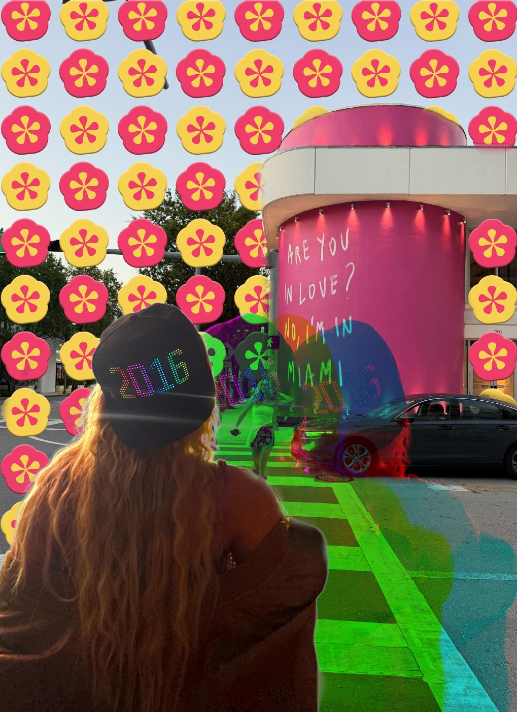
Collage Selfie
A self-representation collage combining a portrait, layered imagery, and a repeating floral motif.
The brief focused on layers and masks to combine images into a personal composition.
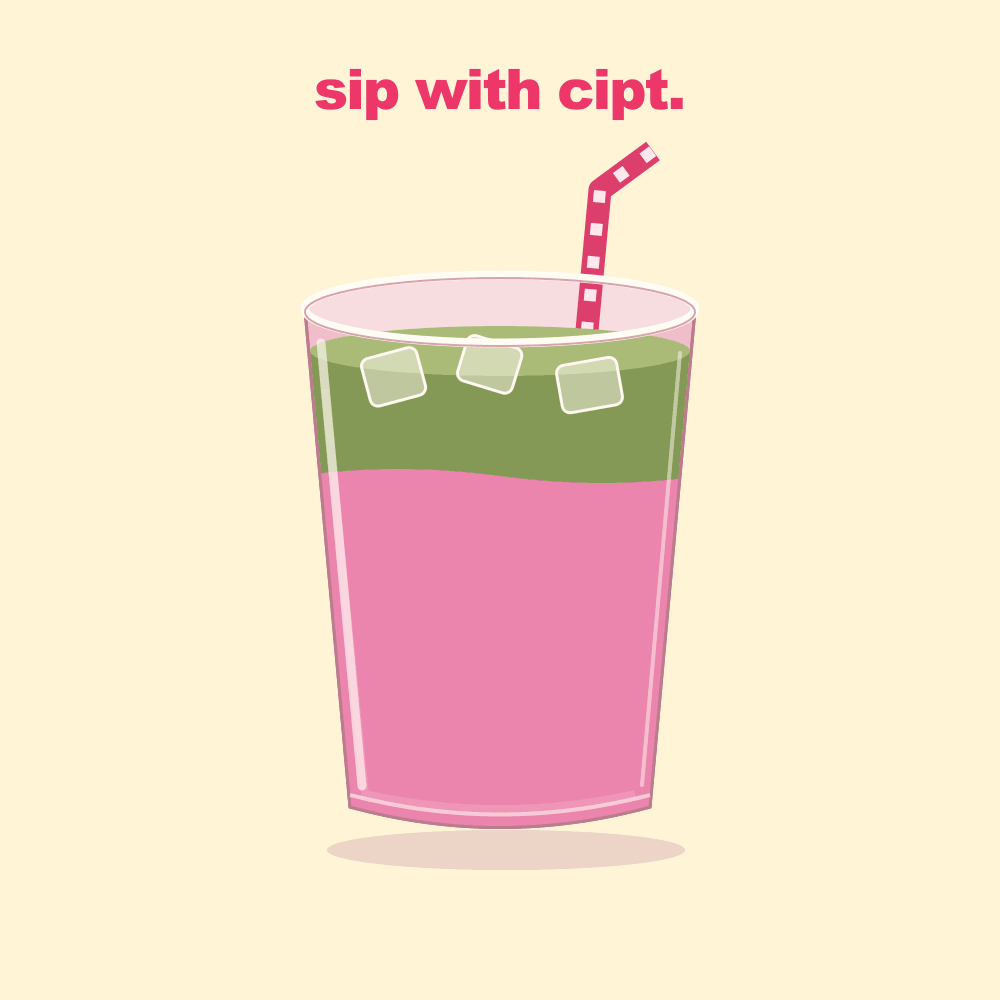
“sip with cipt.”
A stylized drink illustration with a pink, cream, and green palette.
Created for an animation brief focused on Photoshop’s Timeline, drawing, and layer functions.
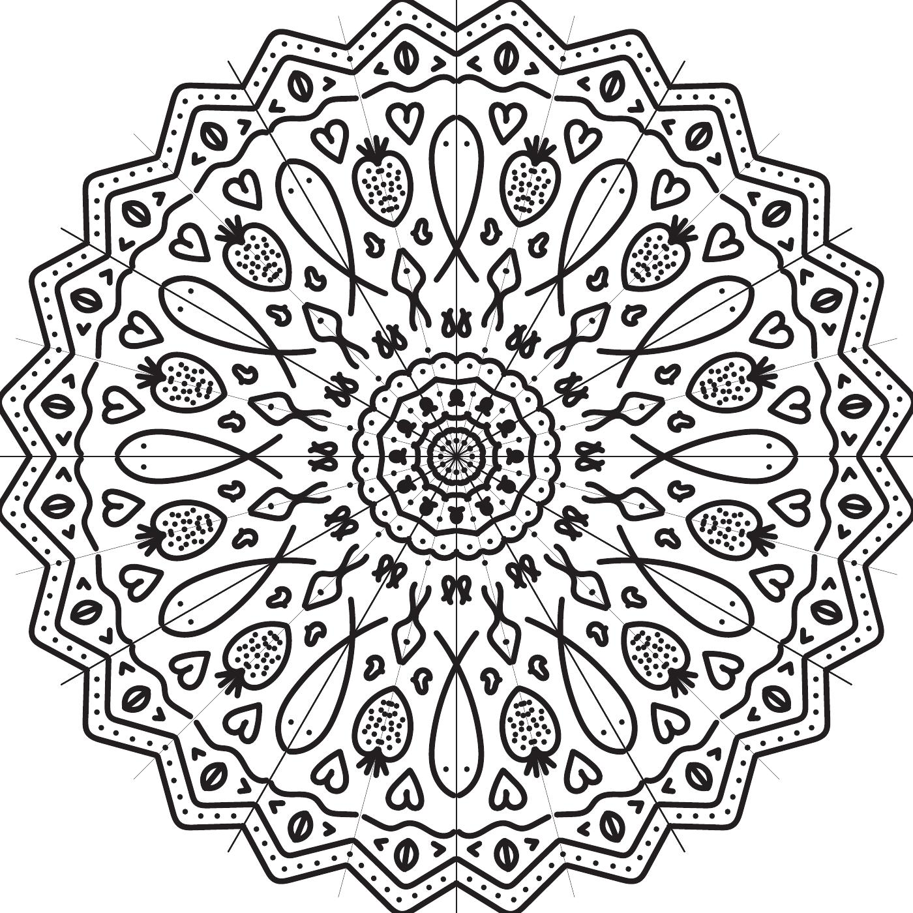
Mandala
A detailed radial composition using repeating illustrated motifs and black-and-white linework.
The brief explored drawing tools, shape transformations, and vector composition.
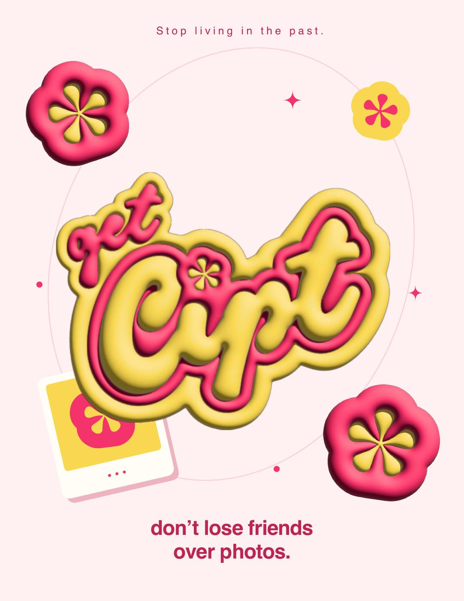
CIPT 3D Illustration
Dimensional pink-and-yellow lettering and flower forms turn the CIPT identity into a playful promotional composition.
Created for a brief exploring Illustrator’s type and 3D tools.
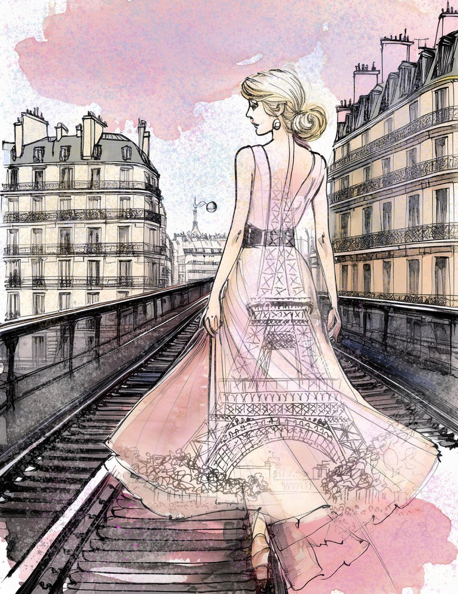
Paris Digital Art
A fashion illustration combining a Paris streetscape, watercolor textures, and an Eiffel Tower-inspired dress.
Created for a brief combining generative imagery with additional Photoshop and/or Illustrator techniques.
An app,
through iteration.
An image-making app developed for a prompt-based software creation assignment. The brief called for a specific image-making function, iterative prompts, and consideration of UI/UX.
Submitted as a shared Gemini app. Access and availability depend on Google.
Open the submitted app ↗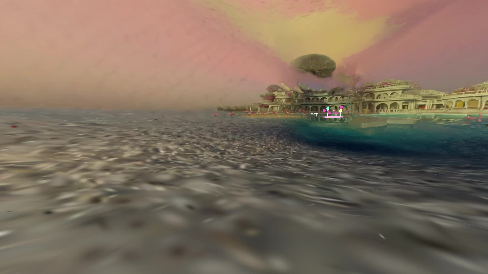
Worldbuilding & camera exploration
A surreal waterside world with architectural forms, soft skies, and colorful sculptural elements. The assignment combined AI world generation, added 3D assets, and four camera sequences.
The Horrors
of Posting.
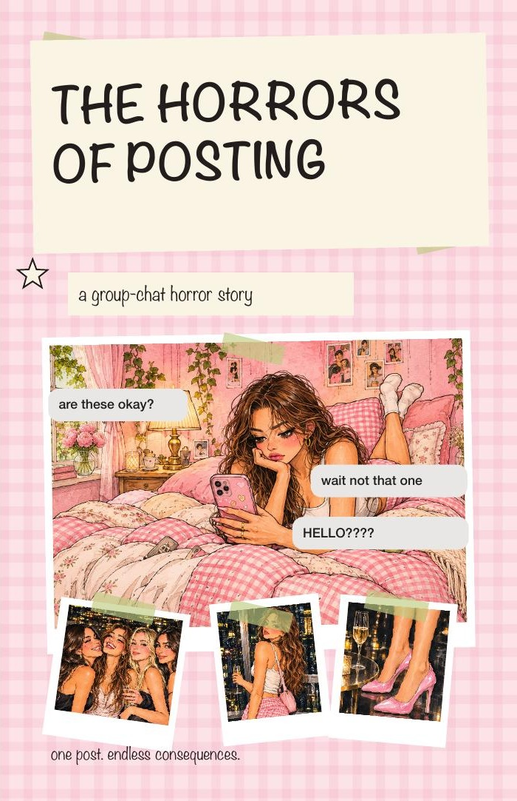
One post. Endless consequences.
Creative coursework · Adobe InDesign
I designed this short comic in Adobe InDesign, turning the familiar chaos of choosing photos and getting friends’ approval into a visual story. Across four interior pages, the narrative moves from choosing a carousel to group-chat feedback and a last-minute request to delete the post.
A pink-and-cream palette, scrapbook-style photo frames, speech bubbles, and chat messages connect the cover and pages. The project showcases page layout, typography, panel composition, and pacing through sequential storytelling.
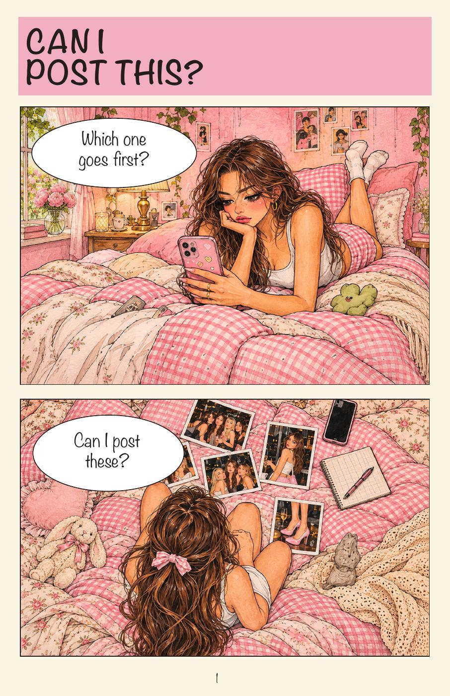
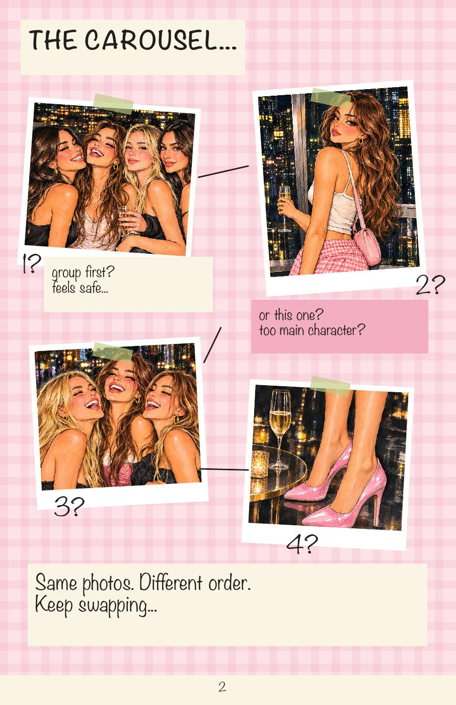
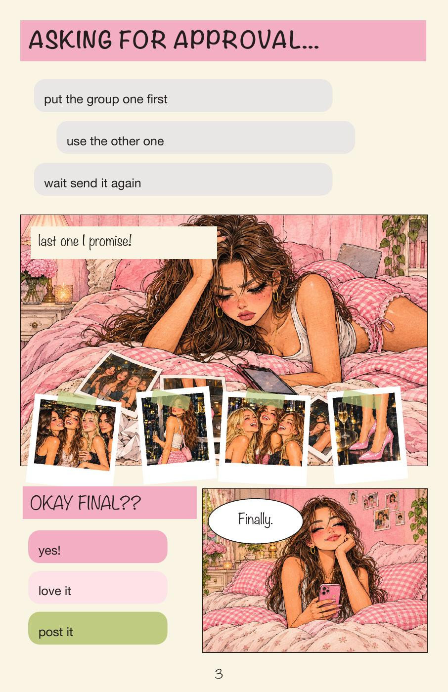
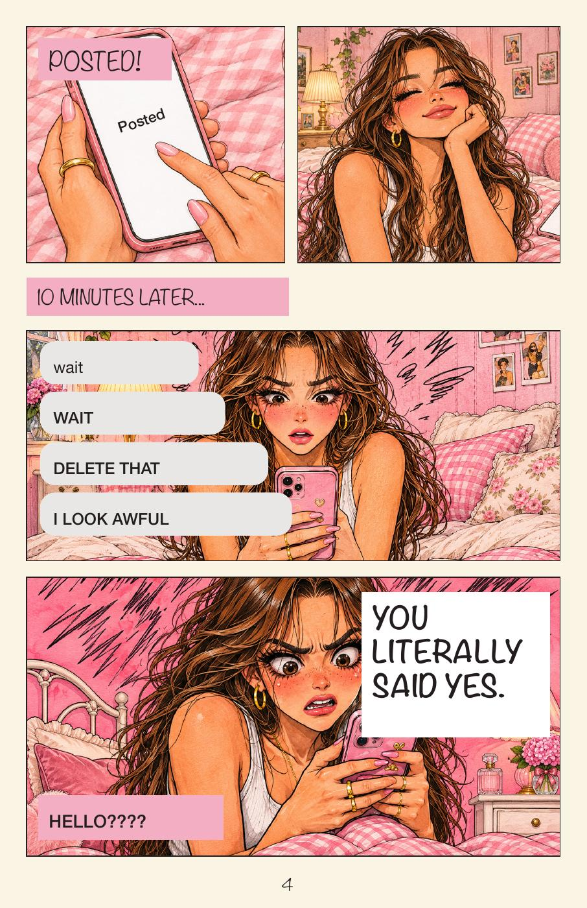
The Rhode
to Success.
Adobe InDesign · Independent editorial
How beauty becomes a lifestyle.
I created this editorial in Adobe InDesign, exploring how Rhode builds a recognizable identity through its packaging, visual consistency, and place in everyday routines.
The analysis considers how products and accessories become part of a brand’s wider lifestyle appeal.
Brand analysis, designed as an editorial.
I used InDesign to bring together typography, imagery, page layout, and an embedded video in a cohesive digital publication. The cover and interior spread demonstrate my approach to visual hierarchy and editorial storytelling.
Independent editorial by Sienna Signorello · Brand photography and video: Rhode
Thank you.
For taking a closer look.
sas4058@miami.eduUniversity of Miami / Fall 2026
Back to the beginning ↑